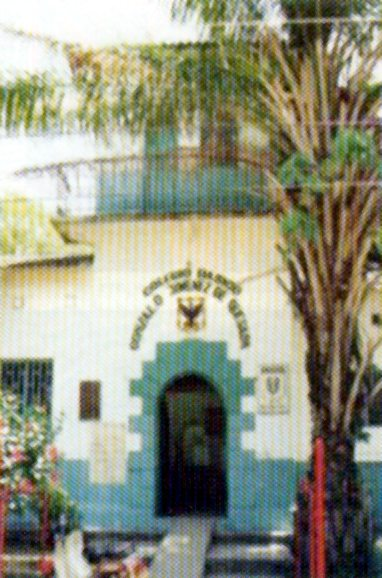

Mariquita y el eco de un propuesta regional
Por HERNANDO LÓPEZ VISBAL
Un ambiente de euforia y optimismo alienta comunidad fresnense con ocasión del sesquicentenario de su fundación. ¿Cuál es la manera más afortunada para celebrar esa efeméride? Para la FUNDACIÓN HIJOS Y AMIGOS DEL FRESNO, colectivo que propone un paradigma de exaltación de la efeméride fundacional que contrasta con el esquema tradicional que alienta tal tipo de eventos, el rescate de la identidad cultural y de la memoria colectiva debe ser la base de la propuesta que debe orientar la celebración. La indagación de nuestros orígenes, lo que somos como grupo socio cultural, nuestra perspectiva como pueblo, la contrariedad y variedad de nuestras diversas maneras de ser, son asuntos esenciales que se inscriben en esa propuesta que ni descalifica ni hace desmerecer a otras que son fruto de una mirada distinta sobre nuestras realidades.
La coyuntura generada por el contenido de esa propuesta me causa inquietudes con alcance regional. En nuestro inmediato entorno geográfico existen presencias que nos resultan caras, ecos de nombres que resuenan en nosotros con una historia común en algunos aspectos; de diversidad en otros. En todo caso, lazos de innegable parentesco existen y cohesionan los municipios que usualmente denominamos del Norte. Antes de la conquista, unas mismas familias ocupaban la región; y en la conquista una misma mirada inquietó nuestros antepasados. El nombre de esta revista, YULDAMA, evoca la legendaria figura del cacique que no sólo ejemplariza lo que es el valor y el honor sino la dignidad de nuestros lejanos ancestros. El Sabio Mutis transitó recovecos y entresijos de nuestra múltiple geografía regional para saciar su curiosidad científica. En las medianías del siglo XIX, en vísperas de nuestra fundación y hasta mucho después, el Camino del Ruiz que cursaba por peñascos y breves planicies de la cordillera era la ruta que conducía las expediciones antioqueñas hasta la llanura inmensa para encontrar los fortines tabacaleros de Ambalema y al pujante y rico puerto de Honda, cuyo comercio era expresión mayúscula del desarrollo. En el siglo XX la imaginación y destreza de la ingeniería permitió que un hilo metálico comunicara las cumbres caldenses con la llanura tolimense, en un tránsito increíble y fantástico del cable aéreo por peñascos y hondonadas que terminaba en un pacífico descenso sobre las tenues laderas de las montañas que rodean a Mariquita por uno de sus costados.
|
|
 |
Iglesia La Ermita. Foto de Jorge E. Alarcón R. |
Mansión Jiménez de Quesada |

En la región es precisamente Mariquita la población con la cual el Fresno tiene más profundos vínculos. Es notable la presencia de muchos de nuestros paisanos allá en ese solar en el que gozan de un trato condescendiente y en cuya configuración sociológica actual han incidido. De hecho, Mariquita es la municipalidad del norte con más acentuado cosmopolitismo. Desde luego que a las demás poblaciones de la región nos encontramos unidos aunque con menor intensidad.
Justamente por esas variadas razones, y por otras que son muchas, el Norte del Tolima es comunidad espiritual antes que unidad geográfica. Los límites demarcan territorios pero no aprisionan el alma de los pueblos. Ahí una de las inquietudes que suscita la mencionada propuesta: si el Fresno está inmerso en la región, el rescate de la identidad cultural y de la memoria colectiva tiene un ámbito de validez más allá de nuestros límites locales. Sobre esa evidencia, más allá del simple recuerdo o evocación nostálgica, los hechos y personajes compartidos por la región son base para construir nuestro futuro, pues incitan a la reflexión de lo que hemos sido, lo que somos y lo que podemos ser.
Específicamente la historia de Mariquita es rica en personajes. Don Gaspar de Figueroa, el colosal pintor de la Colonia, era oriundo de allí. Igualmente mariquiteño fue don Francisco Antonio Moreno y Escandón, el singular iluminado que no sólo escaló la jerarquía burocrática de la organización del Estado colonial sino que, habiendo propuesto la primera reforma universitaria en los territorios americanos y que fuera implementada entre 1774 y 1779 en los Colegios Mayores del Rosario y San Bartolomé, se convirtió en el abrevadero ideológico de quienes luego lideraron el proceso emancipador. Don José León Armero, presidente del Estado de Mariquita, arquitecto de su avanzada constitución y mártir de la gesta independentista, nació ahí. Hechos históricos de tremenda trascendencia ocurrieron igualmente allí, siendo los más notables: entre 1783 y 1790 Don José Celestino Mutis instaló la Expedición Botánica y en los solares de nuestra región se cocinó el más grande hecho científico del siglo XVIII en América; Mariquita, bajo el eufórico y optimista empuje de las incipientes ideas de independencia se proclamó Estado soberano en 1815. Todos esos personajes y hechos involucraron lo que hoy es la región del Norte del Tolima. Esa historia también es nuestra; y es parte de la singularidad cultural y de la memoria de la región.
La oportuna formulación del colectivo FUNDACION HIJOS Y AMIGOS DEL FRESNO debe trascender hasta la región. Cercana está la fecha de una celebración histórica de connotación universal: los doscientos años de la muerte de Don José Celestino Mutis, fallecido en octubre del año 1808, cuya celebración no pasará inadvertida para gobiernos y academias, pero la región, y especialmente Mariquita, deben afianzar desde ya el protagonismo en esa efeméride para rescatar al celebrado y su obra de un festín ruidoso pero intrascendente como es usual, especialmente cuando los tonos ambientalistas de nuestro tiempo han puesto los ojos y oídos en el respeto y recuperación de la naturaleza, sobre la que giró en su momento la propuesta científica del Sabio.
De manera que hay razones de sobra para justificar una mayor amplitud de la propuesta. Por ahora, el bicentenario de la muerte de Mutis, pero desde luego que hay muchos más en la región. Por ejemplo, el arquitecto del derecho público interno de Colombia y precursor de nuestra institucionalidad, Don José María Esguerra Samper, nació en Honda. El poeta Diego Fallon, el insuperable cantor de la luna, también es orgullo nuestro. El rescate de la identidad cultural y la memoria colectiva, como propuesta, está llamada no solo a contrastar estilos celebratorios agotados en la cotidianidad sino, y lo más importante, a proyectar el futuro a partir de nuestro pasado, de nuestra historia. Ahí queda la idea. Ojala no sólo flote sino que se haga realidad, así sea bajo otro esquema organizativo pero con identidad de objetivo al de la Fundación.
|
Casa de la segunda Expedición Botánica. Foto de Jorge E. Alarcón R. |
Ruinas de Santa Lucía |